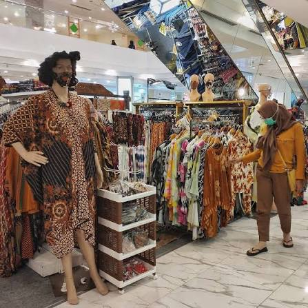

Budaya
Budaya
Destinasi wisata panorama senja di selatan jogja yang tepatnya berada di gunungkidul
 Sejarah
Sejarah
Pusat kebudayaan Jawa yang masih aktif, tempat Sultan dan keluarga kerajaan bermukim hingga kini.
 Alam
Alam
Gunung berapi aktif paling terkenal di Indonesia dengan panorama sunrise yang memukau wisatawan.
 Budaya
Budaya
Kompleks candi Hindu terbesar di Indonesia, berdiri megah dengan arsitektur yang luar biasa indah.
 Pantai
Pantai
Pantai ikonik Yogyakarta dengan ombak besar, pasir hitam, dan pemandangan matahari terbenam yang memukau.
 Kuliner
Kuliner
Surga kuliner jalanan Jogja dengan gudeg, angkringan, dan berbagai jajanan khas yang menggugah selera.
 Belanja
Belanja
Pasar tradisional tertua di Yogyakarta, surga batik, kerajinan, dan oleh-oleh khas Jogja dengan harga terjangkau.
 Alam
Alam
Hutan pinus yang sejuk dan rindang, spot foto estetik favorit anak muda Yogyakarta dan sekitarnya.
 Sejarah
Sejarah
Bekas taman kerajaan Keraton Yogyakarta dengan arsitektur indah, kolam pemandian, dan lorong bawah tanah.
 Pantai
Pantai
Pantai pasir putih bersih dengan air jernih kebiruan, dikelilingi tebing karang yang cantik dan menawan.
 Kuliner
Kuliner
Gudeg legendaris Yogyakarta yang sudah berdiri sejak 1950, wajib dicoba bagi pecinta kuliner nusantara.

BelanjaPusat oleh-oleh batik terlengkap di Yogyakarta dengan ratusan pilihan motif batik khas Jogja berkualitas.
Destinasi tidak ditemukan
Coba kata kunci atau filter yang berbeda.